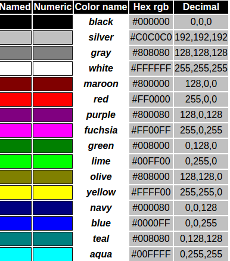
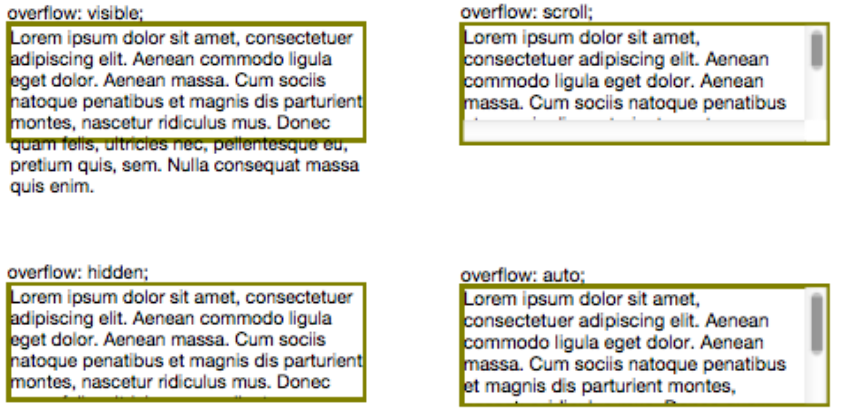
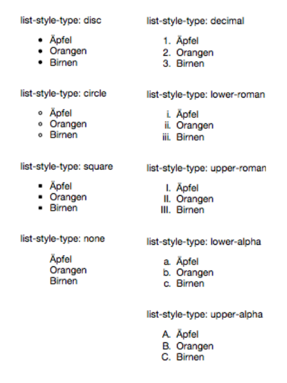
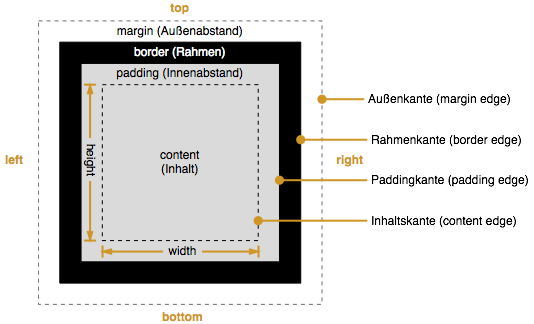

CSS
Inhalt
- CSS Grundlagen
- CSS-Selektoren
- CSS-Layout
- CSS-Attribute
CSS Grundlagen
Herausforderungen
HTML zeichnet Text logisch aus- Fließtext mit dynamischem Umbruch
- keine feste Platzierung von Elementen
- Darstellung folgt der Reihenfolge der Tags in der HTML-Datei
- keine Überdeckung von Objekten
- Browser stellt Inhalt passend für das Gerät des Benutzers dar
Cascading Style Sheets
- Definiert physische Formatierung von HTML-Seiten
- Formatierung kann definiert werden für
- vorhandene logische Formatierungen (Überschriften, Listen, …)
- eigene Formatklassen
- einzelne Textblöcke
- unterschiedliche Formate für Druck, Bildschirm, …
- CSS Version: 3.0 2012 (Draft)
Cascading Style Sheets
- Vielseitige Gestaltung der physischen Darstellung
- Schriftart, Schriftgröße, Schriftstil
- Zeichen- und Zeilenabstand, Einrückung
- Text- und Hintergrundfarbe
- Rahmen
- Farben
- freie Platzierung und Überlappung von Objekten
Vorbereitung für CSS-Formatierung
HTML-Seite als logische Sequenz von Blöcken
- jeder Block wird mit einem Tag gekennzeichnet (<section>)
- Reihenfolge entspricht der logischen Reihenfolge
- Blöcke werden dann mit CSS formatiert, positioniert und ausgerichtet
- Text- und Hintergrundfarbe
Einbinden von CSS: Eigene Datei
- Normalfall in vielen Web-Projekten
- Unterstützt Wiederverwendung (kann von mehreren HTML-Dateien genutzt werden)
- Trennung von Inhalt und Darstellung
- Einbinden über <link>-Element im Header der Datei
Einbinden von CSS: Inline
- Bei jedem Element über style-Attribut möglich
- Verletzt Trennung zwischen Inhalt und Darstellung
Hallo dies ist ein Absatz.
CSS-Selektoren
Aufbau einer CSS-Regel
Regel besteht aus Selektor und Deklarationen
- Der Selektor legt fest, für welche Elemente die Regel gilt
- Die Deklarationen bestimmen die Darstellung der Elemente
- Eine Deklaration weist einer Eigenschaft einen Wert zu (getrennt durch einen Doppelpunkt)
- Deklarationen werden durch Semikolon getrennt
Unterschiedliche Selektoren
- Universal (*) – Alle Elemente
- Typ – Alle Elemente eines Typs (z. B. <h1>)
- ID (#name) – Element mit einer ID
- Klasse (.name) – Elemente, die einer Klasse über das class-Attribut zugeordnet wurden
- Gruppen (a, b, c) – Alle Elemente der Gruppe auf einmal
- Nachfahre (a b) – Nachfahren
- Kind (a > b) – Kinder von einem Element sind
- Geschwister (a + b) – Benachbarte Geschwisterelemente
- Pseudoklassen (:klasse) – Eingebaute Klassen
Beispiel: Selektoren
html body {
background: #222222;
color: #ffffff;
font-size: 32px;
}
h1 {
font-size: 2em;
}
#headline {
background: red;
}
.stuff {
border: 1px solid red;
}
CSS3 :nth-child() Selector
p:nth-child(2) {
background: #ff0000;
}
//general Syntax:
:nth-child(number) {
css declarations;
}
Pseudoklassen
- :link – Link im originalen Zustand von <a>
- :visited – Link nachdem er angeklickt wurde
- :hover – Link, wenn die Maus über dem Link steh
- :active – Link, wenn er gerade angeklickt wird
- :focus – Element, dass gerade den Fokus hat (Formulare, Links)
Pseudoklassen Beispiel
/* Links stylen */
a:link { color: olive; }
a:visited { color: grey; }
a:active { color: red; }
a:hover { font-weight: bold; }
Maßeinheiten
Relative Maßeinheiten
- orientieren sich an anderen Werten
- gut geeignet für Bildschirmdarstellung
- Beispiel: Pixel (px), Prozent (%)
Absolute Maßeinheiten
- stehen für sich
- gut geeignet für Druckausgaben
- Beispiel: Millimeter (mm) oder Punkt (pt)
Angabe von Farbwerten
- rgb(255,140,0) – Farbanteile rot, grün, blau im Bereich 0…255
- #FF8C00 – Farbanteile hexadezimal (00…FF)
- benannte Farben: black, white, olive, …
- hsl(0, 100%, 50%) – HSL (hue saturation lightness) Farbraum
- Angabe eines Alpha-Kanals als vierten Wert
- rgba(255,140,0, 0.5) – a zwischen 0 und 1
Farbpalette
CSS-Attribute (Beispiele)
Text: Behandlung von Overflow
Text: Formatierung
- font-family – Liste (kommagetrennt) von Zeichensätzen (Helvetia, Times New Roman)
- font-style – Schriftstil (normal, italic (kursiv)
- font-size – Schriftgröße
- color – Textfarbe
- font-weight – Schrift"gewicht" lighter, normal, bold, bolder
- text-decoration – Textdekoration (underlinde, overline, line-through, blink (Nein!!)
Anzeigeart mit display
- none – nichts anzeigen und auch keinen Platz dafür freihalten
- inline – im laufenden Textfluss anzeigen
- block – nichts anzeigen und auch keinen Platz dafür freihalten
- list-item – wie block, aber mit Aufzählungszeichen davor
Hintergrund
- background-color – Hintergrundfarbe
- background-image – Hintergrundbild
background-repeat – Wiederholen des Hintergrundbilds
- repeat – Hintergrundfarbe
- repeat-x/y – Wiederholen nur in X/Y-Richtung
- no-repeat – Keine Wiederholung
List-Styles
CSS-Layout
Display Model
- Alle Elemente haben ein Display Model
- Häufigst verwendete Models sind:
Block,Inline-Block,Inline- Neuerdings auch
Flexbzw. Flexbox
Beispiel: Display Model
<div>Dieses Element hat einen folgenden Absatz</div>
<p>Dieses Element ebenfalls</p>
<span>Diese</span>
<span>Elemente</span>
<span>nicht!</span>Box Model
Box Model: Margin und Padding
Randangaben
padding-top: 5px;
padding-right: 10px;
padding-bottom: 15px;
padding-left: 25px;
/*Kurzform: top, right, bottom, left*/
padding: 5px 10px 15px 25px;
padding-top: 20px;
padding-right: 5px;
padding-bottom: 20px;
padding-left: 5px;
/*Kurzform: top/ bottom, right/ left*/
padding: 20px 5px;
width, height und z-index
- Alle Elemente haben
widthundheight - Default-Wert ist
inheritbzw.auto - Einheiten für Dimensionen sind
em,px,pt
Position
- Alle Elemente sind statisch by default
- Absolute Inhalte mit
position: absolute - Fixierte Inhalte mit
position: fixed - Statische Inhalte mit
position: static - Relative Inhalte mit
position: relative
Absolute Position
Wenn position absolute or fixed dann haben Elemente eine Position absolut zur linken oberen Ecke des Bildschirms und eine absolute Breite und Höhe.
Relative Position
Wenn position static or relative dann haben Elemente eine Position relativ zu ihrem umgebenden Element.
Beispiel: Static und Relative
<div>
Woop woop (I'm static by default)
<div style="position:relative">
I'm still containing
<p style="position:absolute">
I'm absolute
</p>
</div>
</div>Box Model: Absolute und Fixed
- Angabe
widthundheightmitpx,%möglich - Absolut zur linken oberen Ecke des Bildschirms
- Absolut zum eigenen Element ohne Vererbung
- Position NUR noch mit
top,right,bottom,left z-indexzum Einfluss der Zeichenreihenfolge moeglich
Beispiel: z-index
<style>
div {
position: absolute;
width: 100px;
height: 100px;
}
</style>
<div style="background:#ff0000;top:20px;left:20px;z-index:1"></div>
<div style="background:#ffff00;top:50px;left:50px;z-index:10"></div>
<div style="background:#0000ff;top:80px;left:80px;z-index:1"></div>Box Model: Static und Relative
- Angabe
widthundheightmitpx,%möglich< - Relativ zum umgebenden Element
z-indexhat keine Wirkung beistaticz-indexhat Einfluss beirelative
CSS3: Flexbox
Flexbox Layout
- neuer Working Draft für Responsivness von Webseite
- Alles wird als flex container und flex items verstanden.


Kaskadierung und Vererbung
Kaskadierung (Welche Regel gilt?)
- kontextabhängig individuell(p#id)
- individuell(#id)
- kontextabhängiger Klasse(p.achtung)
- allgemeiner Klasse(.warnung)
- redefiniertem Standard Format(p)
- Innerhalb einer Ebene hat !important Vorrang
- Reihenfolge in der Datei ist das letzte Kriterium
- inline vor embedded vor externem Stylesheet
<style>
p#hervorhebung { color: white; }
p { color: olive; }
achtung { color: green; }
p.achtung { color: orange;}
p#hervorhebung { color: red; }
#hervorhebung { color: grey; }
</style>
<p id="hervorhebung" class="achtung">Dies soll hervorgehoben werden.</p>
<p id="auch" class="achtung">Und das hier auch.</p>
<p id="noch" class="achtung" style="color:green">Dies soll
hervorgehoben werden.</p>Vererbung
Wenn es für ein Element kein direktes Format gibt, wird das Format des übergeordneten Elements übernommen (Vererbung von Formaten)- Vererbung folgt dem Dokumenten-Baum
- Manche Attribute werden nicht vererbt (z. B. text-decoration)